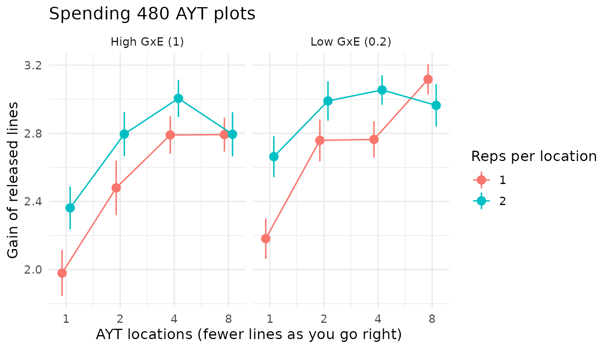
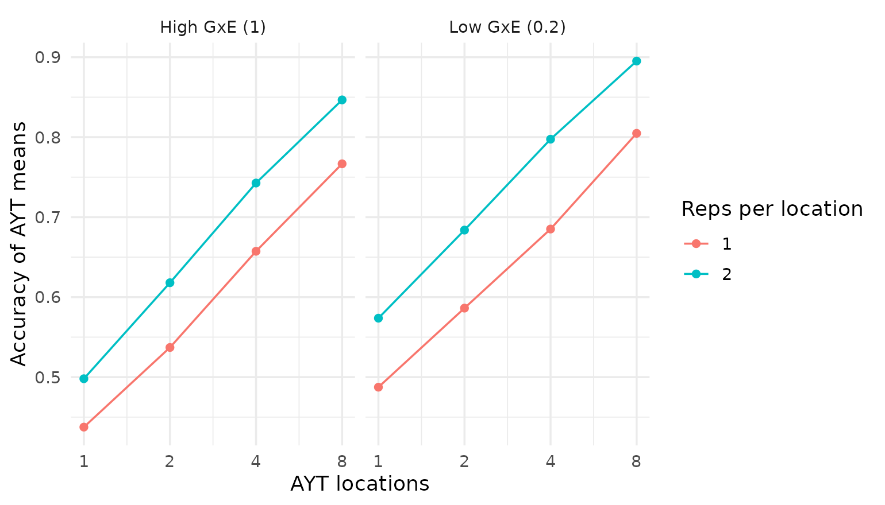

Every breeding program has a fixed number of plots, and every year it decides how to spend them. Test more lines at fewer locations, or fewer lines at more locations? Add a second rep, or a second location? This is one of the oldest questions in plant breeding, and the answer depends on things specific to your program: how large genotype-by-environment (G×E) interaction is, how heritable a single plot is, and how many lines you can afford to make.
This article answers it for a soybean-style line pipeline with
line_pipeline(), a ready-made AlphaSimR program, without
writing any AlphaSimR code.
The pipeline
line_pipeline() simulates the pipeline most
self-pollinated crop programs run. Each cycle, it crosses the parents
and advances the progeny to inbred lines by single-seed descent. Every
line goes into a preliminary yield trial (PYT), and the best
n_ayt lines go on to an advanced yield trial (AYT). The
best AYT lines are released and recycled as parents.
pipeline <- line_pipeline(
n_crosses = 30, progeny_per_cross = 20, # 600 new lines per cycle
n_parents = 20, n_release = 5, cycles = 2,
n_ayt = tune(), ayt_locations = tune(), ayt_reps = tune(),
founders = asr_founders(n_chr = 10, seg_sites = 100, plot_h2 = 0.3)
)
pipeline
#> line_pipeline simulation spec (engine: AlphaSimR)
#>
#> Tuned arguments:
#> n_ayt = tune()
#> ayt_locations = tune()
#> ayt_reps = tune()
#>
#> Fixed arguments:
#> n_parents = 20
#> n_crosses = 30
#> progeny_per_cross = 20
#> line_generation = 5
#> generations_per_year = 2
#> pyt_locations = 1
#> pyt_reps = 1
#> n_release = 5
#> cycles = 2
#> gxe_var = 0.5
#> cross_cost = 25
#> ssd_cost = 2
#> plot_cost = 15
#> max_plots = Inf
#> max_cost = InfThe AYT has 480 plots. Every way of splitting them is a design: 480 lines at one location with one rep, 240 lines at two locations, 60 lines at four locations with two reps, and so on. We list them ourselves, so that every design uses the whole budget:
budget <- 480
designs <- expand.grid(ayt_locations = c(1, 2, 4, 8), ayt_reps = c(1, 2))
designs$n_ayt <- budget / (designs$ayt_locations * designs$ayt_reps)
designs
#> ayt_locations ayt_reps n_ayt
#> 1 1 1 480
#> 2 2 1 240
#> 3 4 1 120
#> 4 8 1 60
#> 5 1 2 240
#> 6 2 2 120
#> 7 4 2 60
#> 8 8 2 30Two assumptions about G×E
How much G×E your environments have is an assumption, not a
choice. We don’t know it exactly, so we run every design under two
values. gxe_var is the G×E variance as a fraction of the
founders’ genetic variance:
reps <- sim_replicates(15, seed = 1, scenarios = sim_scenarios(gxe_var = c(0.2, 1)))
reps
#> # Simulation replicates: 15 paired seeds (1..15) x 2 scenario(s)
#> # Scenarios: gxe_var=0.2 | gxe_var=1
#> # A tibble: 15 × 2
#> id seed
#> <chr> <int>
#> 1 Rep01 1
#> 2 Rep02 2
#> 3 Rep03 3
#> 4 Rep04 4
#> 5 Rep05 5
#> 6 Rep06 6
#> 7 Rep07 7
#> 8 Rep08 8
#> 9 Rep09 9
#> 10 Rep10 10
#> 11 Rep11 11
#> 12 Rep12 12
#> 13 Rep13 13
#> 14 Rep14 14
#> 15 Rep15 15Run it
metrics <- sim_metric_set(release_gain, sim_metric("ayt_accuracy", "maximize"), plots)
res <- tune_grid(pipeline, reps, grid = designs, metrics = metrics)
res
#> # Simulation study (grid): 8 designs x 15 replicates x 2 scenario(s) = 240 simulations
#> # Spec: line_pipeline; metrics: release_gain, ayt_accuracy, plots
#> # Best by release_gain:
#> # A tibble: 3 × 8
#> n_ayt ayt_locations ayt_reps .metric mean n std_err .config
#> <dbl> <dbl> <dbl> <chr> <dbl> <int> <dbl> <chr>
#> 1 60 4 2 release_gain 3.03 15 0.0889 Config007
#> 2 60 8 1 release_gain 2.95 15 0.0817 Config004
#> 3 120 2 2 release_gain 2.89 15 0.116 Config0068 designs × 2 scenarios × 15 replicates is 240 simulated breeding programs, written in one call.
Locations or reps?
m <- collect_metrics(res, by_scenario = TRUE, type = "wide")
m$gxe <- ifelse(m$.scenario == "gxe_var=0.2", "Low GxE (0.2)", "High GxE (1)")
ggplot(m, aes(ayt_locations, release_gain, colour = factor(ayt_reps))) +
geom_pointrange(aes(ymin = release_gain - release_gain_se, ymax = release_gain + release_gain_se),
position = position_dodge(width = 0.3)) +
geom_line(position = position_dodge(width = 0.3)) +
facet_wrap(~gxe) +
scale_x_continuous(trans = "log2", breaks = c(1, 2, 4, 8)) +
labs(x = "AYT locations (fewer lines as you go right)", y = "Gain of released lines",
colour = "Reps per location", title = "Spending 480 AYT plots")
ggplot(m, aes(ayt_locations, ayt_accuracy, colour = factor(ayt_reps))) +
geom_line() + geom_point() +
facet_wrap(~gxe) +
scale_x_continuous(trans = "log2", breaks = c(1, 2, 4, 8)) +
labs(x = "AYT locations", y = "Accuracy of AYT means", colour = "Reps per location")
Read the two plots together:
- Accuracy rises with the number of plots each line gets. For the same plots per line, spreading them over more locations is at least as accurate as adding reps, and slightly more so when G×E is high, because only new environments average G×E away.
- Gain needs accuracy and enough lines to select among. Testing all 480 lines at one location is the worst design in both scenarios: lots of lines, but they are ranked so poorly that selection barely helps. Going to the other extreme, 30 lines at 16 plots each, gives up too much selection intensity. The best designs test 60 to 120 lines with 4 to 8 plots each, spread over 2 to 8 locations.
- The top designs are close. Their averages are within about one standard error of each other, so the simulation cannot separate them with 15 replicates. That is useful too: choose among them on cost and logistics (a new location usually costs more than a second rep), or run more replicates for just those designs.
Scenarios show how much the answer depends on what you assumed. Here the ranking of the top designs shifts a little between low and high G×E, but the main lesson, to give each AYT line several environments, holds in both.
show_best(res, metric = "release_gain", scenario = "gxe_var=1", n = 3)
#> # A tibble: 3 × 8
#> n_ayt ayt_locations ayt_reps .metric mean n std_err .config
#> <dbl> <dbl> <dbl> <chr> <dbl> <int> <dbl> <chr>
#> 1 60 4 2 release_gain 3.01 15 0.109 Config007
#> 2 120 2 2 release_gain 2.80 15 0.129 Config006
#> 3 30 8 2 release_gain 2.79 15 0.129 Config008
show_best(res, metric = "release_gain", scenario = "gxe_var=0.2", n = 3)
#> # A tibble: 3 × 8
#> n_ayt ayt_locations ayt_reps .metric mean n std_err .config
#> <dbl> <dbl> <dbl> <chr> <dbl> <int> <dbl> <chr>
#> 1 60 8 1 release_gain 3.12 15 0.0882 Config004
#> 2 60 4 2 release_gain 3.05 15 0.0865 Config007
#> 3 120 2 2 release_gain 2.99 15 0.116 Config006Make it yours
Everything above is one spec and one call to
tune_grid(). To fit it to your program, change the
arguments:
-
Your budget and costs:
plot_cost,cross_cost,ssd_cost, andmax_plotsormax_costto rule out designs over budget. -
Your pipeline:
n_crosses,progeny_per_cross,line_generation,generations_per_year(2 with a winter nursery),pyt_locations,n_parents. -
Your trait:
plot_h2andgxe_var, best set from your own trial data and run as scenarios when you are unsure. -
Let the tuner choose: mark any of these
tune()and usetune_bayes()to search a large space, as in Choosing a design.